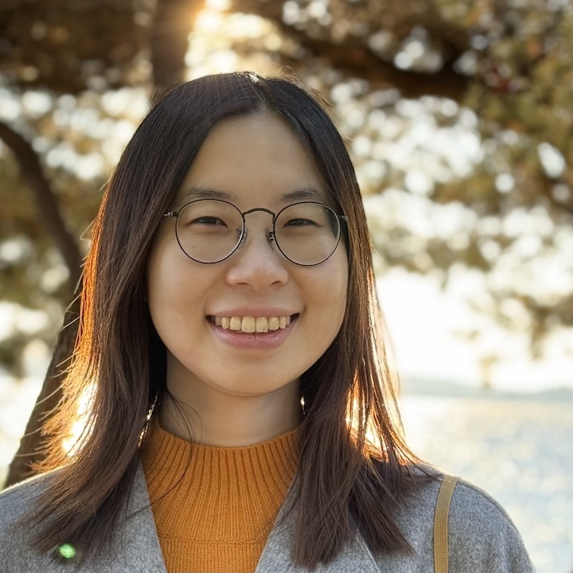

|  |
|
About
I am currently a PhD student in the Paul G. Allen School of Computer Science and Engineering (CSE) at the University of Washington, working with professors Byron Boots and Magnus Egerstedt (now at UC Irvine). My research aims to make robot learning safe and sample efficient. I approach this through leveraging domain knowledge and problem structure, which are readily available in many robotics problems. My specific research topics include offline reinforcement learning, safe reinforcement learning, learning stable motion policies, learning from human demonstrations, and planning & control with formal guarantees. My research is supported by the NVIDIA Graduate Fellowship. I am fortunate to be selected as an EECS RisingStar (2023) and an R:SS Pioneer (2022).
I moved to the University of Washington from the Georgia Institute of Technology, where I was a Robotics PhD student. I received my Master's degree in Robotics from Carnegie Mellon University, where I was advised by professor Katia Sycara. Before that I got my Bachelor's degree in Automation from Zhejiang University, China. I spent two wonderful summers at NVIDIA Research working with Nathan Ratliff and Dieter Fox. I also spent a great summer working with Franziska Meier at Meta AI. I am currently on the job market for industry positions.

|

|

|

|
| 2019 - Present | 2017 - 2019 | 2015 - 2017 | 2011 - 2015 |
Publications
* indicates equal contributionJournal Publication
- J. Urain, A. Li, P. Liu, C. D'Eramo, J. Peters, "Composable Energy Policies for Reactive Motion Generation and Reinforcement Learning." International Journal of Robotics Research, 2023
- K. Van Wyk, M. Xie, A. Li, M.A. Rana, B. Babich, B. Peele, Q. Wan, I. Akinola, B. Sundaralingam, D. Fox, B. Boots, and N. Ratliff, "Geometric Fabrics: Generalizing Classical Mechanics to Capture the Physics of Behavior. IEEE Robotics and Automation Letters (RA-L), 2022 [ PDF] (Best Paper Award)
- P. Pierpaoli, A. Li, M. Srinivasan, X. Cai, S. Coogan, and M. Egerstedt, "A Sequential Composition Framework for Coordinating Multi-robot Behaviors." IEEE Transactions on Robotics (T-RO), 2020 [ PDF]
Conference Publications
- A. Li, D. Misra, A. Kolobov, C.-A. Cheng, "Survival Instinct in Offline Reinforcement Learning." Neural Information Processing Systems (NeurIPS), 2023 [ PDF] (Spotlight)
- A. Li, B. Boots, C.-A. Cheng, "MAHALO: Unifying Offline Reinforcement Learning and Imitation Learning from Observations." International Conference on Machine Learning (ICML), 2023 [ PDF]
- X. Meng, N. Hatch, A. Lambert, A. Li, N. Wagener, M. Schmittle, J. Lee, W. Yuan, Q. Chen, S. Deng, G. Okopal, D. Fox, B. Boots, A. Shaban, "TerrainNet: Visual Modeling of Complex Terrain for High-speed, Off-road Navigation." Robotics: Science and Systems (R:SS), 2023 [ PDF]
- M. A. Rana*, A. Li*, D. Fox, S. Chernova, B. Boots, N. Ratliff, "Towards Coordinated Robot Motions: End-to-End Learning of Motion Policies on Transform Trees." IEEE/RSJ International Conference on Intelligent Robots and Systems (IROS), 2021 [ PDF]
- A. Li*, C.-A. Cheng*, M. A. Rana, M. Xie, K. Van Wyk, N. Ratliff, and B. Boot, "RMP2: A Structured Composable Policy Class for Robot Learning." Robotics: Science and Systems (R:SS), 2021 [ PDF] [ code]
- J. Urain, A. Li, P. Liu, C. D'Eramo, J. Peters, "Composable Energy Policies for Reactive Motion Generation and Reinforcement Learning." Robotics: Science and Systems (R:SS), 2021 [ PDF]
- N. Ratliff, K. Van Wyk, M. Xie, A. Li, and M. A. Rana, "Generalized Nonlinear and Finsler Geometry for Robotics." IEEE International Conference on Robotics and Automation (ICRA), 2021 [ PDF]
- M. A. Rana, A. Li, D. Fox, B. Boots, F. Ramos, and N. Ratliff, "Euclideanizing Flows: Diffeomorphic Reductions for Learning Stable Dynamical Systems." Conference on Learning for Dynamics and Control (L4DC), 2020 [ PDF]
- A. Li, C. Cheng, B. Boots, and M. Egerstedt, "Stable, Concurrent Controller Composition for Multi-Objective Robotic Tasks." IEEE Conference on Decision and Control (CDC), 2019 [ PDF]
- M. A. Rana*, A. Li*, H. Ravichandar, M. Mukadam, S. Chernova, D. Fox, B. Boots, and N. Ratliff, "Learning Reactive Motion Policies in Multiple Task Spaces from Human Demonstrations." Conference on Robot Learning (CoRL), 2019 [ PDF]
- A. Li, M. Mukadam, M. Egerstedt, and B. Boots, "Multi-Objective Policy Generation for Multi-Robot Systems Using Riemannian Motion Policies." The International Symposium on Robotics Research (ISRR), 2019 [ PDF]
- A. Li and M. Egerstedt, "On the Trade-Off Between Communication and Execution Overhead for Control of Multi-Agent Systems" American Control Conference (ACC), 2019 [ PDF]
- A. Li, L. Wang, P. Pierpaoli, and M. Egerstedt, "Formally Correct Composition of Coordinated Behaviors Using Control Barrier Certificates" IEEE/RSJ International Conference on Intelligent Robots and Systems (IROS), 2018 [ PDF]
- A. Li, W. Luo, S. Nagavalli, and K. Sycara, "Decentralized Coordinated Motion for a Large Team of Robots Preserving Connectivity and Avoiding Collisions." IEEE International Conference on Robotics and Automation (ICRA), 2017 [ PDF]
- A. Li, W. Luo, S. Nagavalli, N. Chakraborty, and K. Sycara, "Handling State Uncertainty in Distributed Information Leader Selection for Robotic Swarms." IEEE Conference on System, Man, and Cybernetics (SMC), 2016 [ PDF]
- A. Li, M. Lewis, C. Lebiere, K. Sycara, S. Khatib, Y. Tang, M. Siedsma, and D. Morrison, "A Computational Model Based on Human Performance for Fluid Management in Critical Care." IEEE Symposium Series on Computational Intelligence (SSCI), 2016 [ PDF]
Workshop Paper
- A. Li, D. Misra, A. Kolobov, C.-A. Cheng, "Survival Instinct in Offline Reinforcement Learning and Implicit Human Bias in Data." ICML Workshop on Interactive Learning with Implicit Human Feedback, 2023 [ PDF]
- A. Li*, C.-A. Cheng*, M. A. Rana, N. Ratliff, and B. Boot, "RMP2: a Differentiable Policy Class for Robotic Systems with Control-Theoretic Guarantees." Workshop on Robot Learning, Conference on Neural Information Processing Systems (NeurIPS Workshop), 2020; Microsoft Reinforcement Learning Day, 2021 [ PDF]
Thesis
- A. Li, "Decentralized Coordinated Motion for Robot Teams Preserving Connectivity and Avoiding Collisions." Master's Thesis, Carnegie Mellon University, 2017 [ PDF]
Preprints
- M. Xie, A. Li, K. Van Wyk, F. Dellaert, B. Boots, and N. Ratliff, "Imitation Learning via Simultaneous Optimization of Policies and Auxiliary Trajectories." arXiv:2105.03019 [ PDF]
- N. Ratliff, K. Van Wyk, M. Xie, A. Li, and M. A. Rana, "Optimization Fabrics." arXiv:2008.02399 [ PDF]
- P. Pierpaoli, H. Ravichandar, N. Waytowich, A. Li, D. Asher, and M. Egerstedt, "Inferring and Learning Multi-Robot Policies by Observing an Expert." arXiv:1909.07887 [ PDF]
Selected Honors
- EECS RisingStar2023
- R:SS Pioneer2022
- NVIDIA Graduate Fellowship2020
- Siebel Scholar Class of 20172016
- The Georgia Robotics Fellowship2017
- The Chu Kochen Scholarship, Zhejiang University2014 The Chu Kochen Scholarship is established in memory of late president of the university Dr. Chu Ko-chen. It is widely regarded as the highest honor at Zhejiang University. Each year, 12 (out of more than 20,000) undergraduate students from Zhejiang University are awarded with this scholarship.
- The National Scholarship, China2013